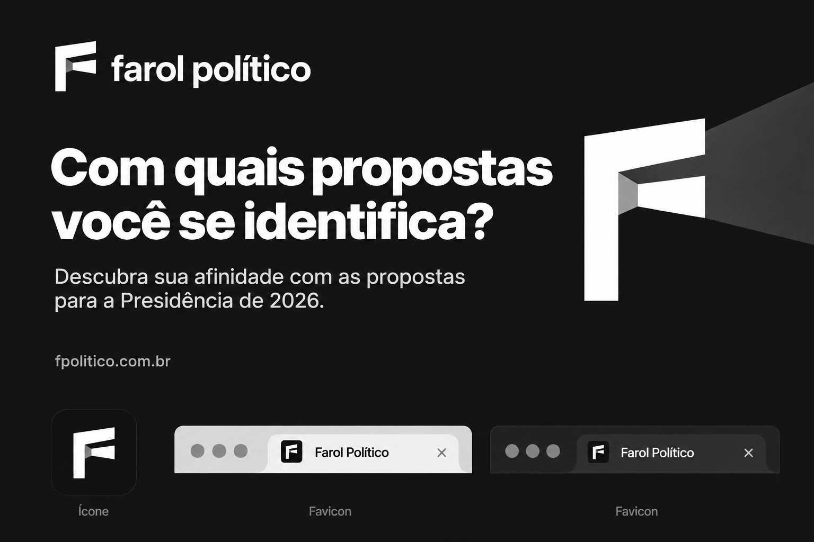
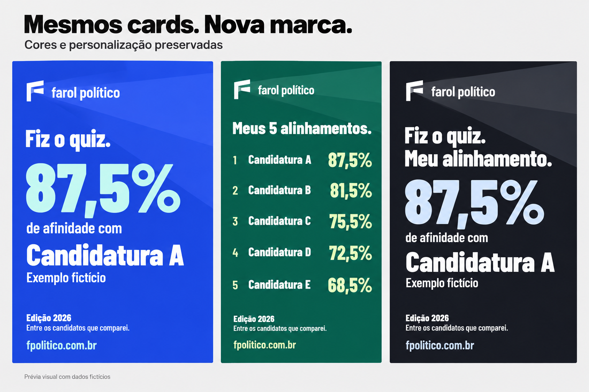

O Feixe, em branco
e transparência.
A mesma assinatura do conceito escolhido, com uma abertura de luz translúcida. No compartilhamento de resultados, mudam o símbolo e o padrão de fundo; as cores, a tipografia e a personalização continuam.
Direção aprovada, entregue no PR #63 e implantada. Ver as imagens finais e os cards reais. Para uma nova revisão dos banners, consulte o handoff.
Marca e preview institucional
F branco sólido, abertura branca com transparência e feixe suave sobre o carvão. O conjunto usa somente preto, branco e cinza.

Prancha conceitual usada na aprovação. A arte final é vetorial e o preview foi exportado em 1200 × 630.
Cards de resultado: cores preservadas
O símbolo de horizonte dá lugar ao Feixe. Um raio discreto conecta a marca ao fundo. Barlow Condensed, as paletas atuais, a escolha de cores, Stories, Post e rankings permanecem.

Dados fictícios para avaliar a identidade visual. A imagem ilustra o padrão, não é uma captura da implementação Flutter.
Um símbolo que funciona pequeno
Estudo SVG em tamanho real, com abertura a 32% de opacidade. A versão preta atende aos fundos claros dos cards sem introduzir outra cor na marca.
Aplicação branca sobre fundo escuro
Versão inversa para fundos claros / ícone instalável
A mesma assinatura dentro do aplicativo
Referência da aplicação no cabeçalho e no menu lateral, mantendo a Inter e a estrutura atual. Os ícones funcionais de navegação seguem com seu significado.
Descubra sua afinidade com as propostas para a eleição presidencial de 2026.
POLÍTICO
Estudo HTML aprovado; a mesma identidade foi aplicada e publicada nas telas reais.
Onde a atualização foi aplicada
- Favicon SVG/PNG e preview do link.
- Ícones PWA, Apple Touch e versões adaptáveis.
- Ícones instaláveis do Android e iOS.
- Cabeçalho, menu, títulos institucionais e diálogo Sobre.
- Marca única nos formatos Post e Stories.
- Maior alinhamento, Top 5 e Top 10.
- Feixe de fundo com transparência discreta.
- Paletas, fontes, dados e controles atuais preservados.